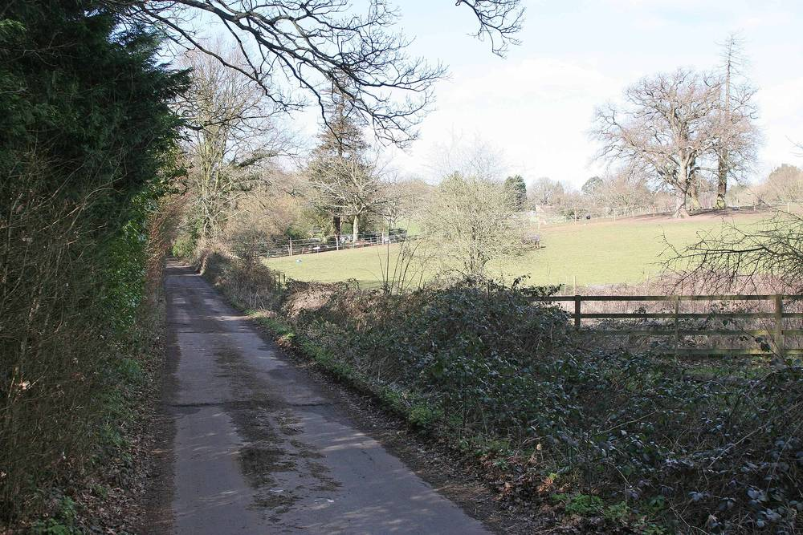

영국 워킹엄·웨스트버크셔 의회, 의회 소유 농지에 태양광 단지 직접 짓는다…패널 4만3,000장·3만5,000장

워킹엄 2,400만 파운드 들여 40년간 해마다 100만 파운드 넘는 이익 기대, 웨스트버크셔는 1,860만 파운드로 40년 1,000만 파운드…공공시설 전기 대고 남는 전기 팔아 재정 보탬, 영국서 약 20개 지자체가 이미 태양광 단지 직접 운영
영국 잉글랜드 남부 버크셔의 워킹엄 의회(Wokingham Borough Council)와 웨스트버크셔 의회(West Berkshire Council)가 각자 소유한 농지에 태양광 단지를 직접 지어 공공시설 전기를 대고 재정 수입도 얻기로 했다. 워킹엄 의회는 다음 주부터 바캄(Barkham) 마을의 의회 땅에 패널 4만3,000장을 설치하는 공사에 들어가며, 사업비 2,400만 파운드를 들여 40년 수명 동안 해마다 100만 파운드가 넘는 이익을 내고 수명이 끝나면 다시 농지로 되돌릴 계획이다. 민간 태양광 단지들이 전력망 확정 접속 대기와 지연에 묶여 온 것과 달리 이 단지는 근처에 변전소가 있고 준비된 사업부터 접속 순서를 다시 정하라는 정부 명령에 힘입어 내년 9월부터 가동하고 2029년에 전체 연결을 마치며, 만든 전기는 의회 업무와 학교·도서관 등 공공시설에 쓰고 남는 것은 전력망에 판다. 웨스트버크셔 의회는 30년 전 물려받아 임차농이 농사를 지어 온 그레이즐리(Grazeley) 근처 땅의 큰 밭 3개에 패널 3만5,000장을 깔기로 하고 3월에 공사를 시작하며, 건설비 1,860만 파운드로 40년 동안 1,000만 파운드의 이익을 낼 것으로 본다. 두 사업은 몇 마일 떨어져 있지만 서로 관계가 없고 둘 다 2027년 말까지 가동할 예정이며, 자유민주당이 이끄는 두 의회는 이번 10년 안에 넷제로를 이루려는 목표에 보탬이 된다고 밝혔다. 이모젠 셰퍼드듀베이(Imogen Shepherd-Dubey) 워킹엄 의회 재정·거버넌스 담당 집행위원은 재정 압박 때문에 공공 자금 쓰는 법을 넓게 보게 됐다며 "우리 땅이니 최대한 활용하는 게 낫다"고 말했고, 제프 브룩스(Jeff Brooks) 웨스트버크셔 의회 대표는 카운슬세나 줄어드는 정부 보조금에만 기대지 말고 새 수입원을 찾아야 한다고 했다.
시민에너지 관점
2,400만 파운드를 들여 해마다 100만 파운드 넘게 돌려받겠다는 워킹엄의 계산과, 영국에서 이미 약 20개 지자체가 태양광 단지를 직접 운영한다는 사실은 공공이 가진 땅이 공공의 발전소가 될 수 있음을 보여 준다. 루마니아의 소도시 트르구카르부네슈티도 시청이 소유한 1MW 태양광 단지로 청사와 가로등 전기를 대려 하듯, 지자체가 직접 주인이 되면 전기요금 절감과 판매 수익이 민간 개발사가 아니라 지역 재정으로 돌아온다. 농지를 덮는다는 걱정에는 40년 뒤 농지로 되돌린다는 약속과 쓰지 않던 공유지부터 쓰는 원칙으로 답할 수 있고, 여기에 주민 출자의 몫을 더하면 이익이 의회 장부를 넘어 주민 가계에까지 닿는다. 국내 지자체도 공영주차장·유휴 공유지를 민간 임대에만 맡기지 말고, 지자체와 주민이 함께 소유하는 공공부지 태양광을 예산 계획에 넣어야 한다.
출처: BBC News 2026-11-04 Allen Sinclair 원문 보기
英ウォキンガム・ウェストバークシャー議会、議会所有の農地に太陽光発電所を自ら建設…パネル4万3,000枚・3万5,000枚
ウォキンガムは2,400万ポンドを投じ40年間毎年100万ポンド超の利益を見込み、ウェストバークシャーは1,860万ポンドで40年1,000万ポンド…公共施設に電力を供給し余剰は売電して財政を補う、英国では約20の自治体がすでに太陽光発電所を直営
英イングランド南部バークシャーのウォキンガム議会（Wokingham Borough Council）とウェストバークシャー議会（West Berkshire Council）が、それぞれ所有する農地に太陽光発電所を自ら建設し、公共施設の電力をまかなうとともに財政収入も得ることになった。ウォキンガム議会は来週からバーカム（Barkham）村の議会所有地にパネル4万3,000枚を設置する工事に入り、事業費2,400万ポンドを投じて40年の耐用期間中に毎年100万ポンドを超える利益を上げ、期間が終われば再び農地に戻す計画だ。民間の太陽光発電所が送電網への確定接続の順番待ちや遅れに縛られてきたのに対し、この発電所は近くに変電所があり、準備の整った事業から接続順を見直すよう求めた政府命令にも後押しされて来年9月から稼働し、2029年に全面接続を終える予定で、発電した電力は議会業務と学校・図書館などの公共施設に使い、余った分は送電網に売る。ウェストバークシャー議会は30年前に受け継ぎ、小作農が耕作してきたグレイズリー（Grazeley）近くの土地のうち大きな畑3枚にパネル3万5,000枚を敷くことにし、3月に着工する予定で、建設費1,860万ポンドで40年間に1,000万ポンドの利益を見込む。二つの事業は数マイルしか離れていないが互いに関係はなく、いずれも2027年末までに稼働する予定で、自由民主党が率いる両議会はこの10年のうちにネットゼロを達成する目標に役立つとしている。ウォキンガム議会の財政・ガバナンス担当執行委員イモジェン・シェパード＝デュベイ（Imogen Shepherd-Dubey）氏は、財政難から公金の使い方を幅広く考えるようになったとして「自分たちの土地なのだから最大限に活用したほうがいい」と述べ、ウェストバークシャー議会のジェフ・ブルックス（Jeff Brooks）代表は、カウンシル税や減り続ける政府交付金だけに頼らず新たな収入源を探すべきだと語った。
市民エネルギーの視点
2,400万ポンドを投じて毎年100万ポンド超を回収するというウォキンガムの計算と、英国ですでに約20の自治体が太陽光発電所を直営しているという事実は、公共が持つ土地が公共の発電所になりうることを示している。ルーマニアの小都市トゥルグ・カルブネシュティも市役所が所有する1MWの太陽光発電所で庁舎や街灯の電力をまかなおうとしているように、自治体自身が持ち主になれば、電気料金の節約分と売電収入が民間開発業者ではなく地域の財政に戻ってくる。農地を覆うという懸念には、40年後に農地へ戻すという約束と、使われていない公有地から使うという原則で応えることができ、そこに住民出資の持ち分を加えれば、利益は議会の帳簿を越えて住民の家計にまで届く。韓国の自治体も公営駐車場や遊休公有地を民間への賃貸だけに任せず、自治体と住民がともに所有する公有地太陽光を予算計画に盛り込むべきだ。
出典: BBCニュース 2026-11-04 Allen Sinclair 原文を読む
英国沃金厄姆和西伯克郡议会在议会所有农地上自建光伏电站…光伏板4万3,000块和3万5,000块
沃金厄姆投资2,400万英镑，预计40年间每年获利逾100万英镑；西伯克郡以1,860万英镑建设，预计40年获利1,000万英镑…为公共设施供电、余电出售补充财政，英国已有约20个地方政府直接运营光伏电站
英国英格兰南部伯克郡的沃金厄姆议会（Wokingham Borough Council）和西伯克郡议会（West Berkshire Council）决定在各自拥有的农地上自建光伏电站，为公共设施供电并增加财政收入。沃金厄姆议会将从下周起在巴卡姆（Barkham）村的议会土地上安装4万3,000块光伏板，事业费2,400万英镑，计划在40年使用期内每年获利超过100万英镑，期满后恢复为农地。与民营光伏电站长期受困于电网确定接入排队和延误不同，该电站附近有变电站，又得益于政府要求优先安排已就绪项目接入的命令，将从明年9月开始发电，2029年完成全面接入；所发电力用于议会业务和学校、图书馆等公共设施，剩余部分售予电网。西伯克郡议会决定在30年前继承、一直由佃农耕种的格雷兹利（Grazeley）附近土地中的3块大田上铺设3万5,000块光伏板，计划3月开工，建设费1,860万英镑，预计40年内获利1,000万英镑。两个项目相距仅几英里但互不相关，均计划在2027年底前投入运行；由自由民主党主导的两个议会表示，项目有助于实现在本十年内达到净零排放的目标。沃金厄姆议会负责财政与治理的执行委员伊莫金·谢泼德－杜贝（Imogen Shepherd-Dubey）表示，财政压力促使议会更广泛地思考如何使用公共资金，"这是我们的土地，不如把它用到最好"；西伯克郡议会领袖杰夫·布鲁克斯（Jeff Brooks）则说，不能只依靠地方税和不断减少的政府补助，而要寻找新的收入来源。
市民能源视角
沃金厄姆投资2,400万英镑、每年收回逾100万英镑的算盘，以及英国已有约20个地方政府直接运营光伏电站的事实，说明公共所有的土地可以成为公共的发电站。正如罗马尼亚小城特尔古卡尔布内什蒂也打算用市政府所有的1MW光伏电站为市政厅和路灯供电，地方政府自己当主人，电费节省和售电收入就会回到地方财政，而不是流向民间开发商。对于覆盖农地的担忧，可以用40年后恢复农地的承诺和优先利用闲置公有地的原则来回应；如果再加上居民出资的份额，收益就能越过议会账本，进入居民的家庭收入。韩国地方政府也不应只把公营停车场和闲置公有地出租给民间，而应把由地方政府与居民共同拥有的公有地光伏纳入预算计划。
来源: BBC新闻 2026-11-04 Allen Sinclair 查看原文
Wokingham and West Berkshire councils to build their own solar farms on council-owned farmland — 43,000 and 35,000 panels
Wokingham's £24m scheme is expected to make more than £1m a year over 40 years and West Berkshire's £18.6m farm £10m over its lifetime; power for public buildings with surplus sold to the grid, as about 20 English councils already own and run solar farms
Wokingham Borough Council and West Berkshire Council in Berkshire, southern England, are each building solar farms on farmland they own, to power public services and bring in revenue. Wokingham will start work next week on installing 43,000 panels on council-owned fields in the village of Barkham; the £24m scheme is expected to make a profit of more than £1m a year across a 40-year lifespan, after which the land will be returned to farming. Whereas privately run solar farms have been held back by a backlog and delays in securing firm grid connections, this site has a substation nearby and, helped by a government order to reprioritise schemes that are ready to go, should be operating from next September with full connection completed in 2029; its electricity will run council services, schools, libraries and other public facilities, and what is not used will be sold to the grid. West Berkshire will turn three large fields near Grazeley, land it inherited 30 years ago and that has been worked by a tenant farmer since, over to 35,000 panels, with construction starting in March; the farm will cost £18.6m to build and is projected to make £10m over 40 years. The two schemes are only a few miles apart but are not connected, both are expected to be operational by the end of 2027, and both Liberal Democrat-led councils say they will help meet targets to reach net zero by the end of the decade. Imogen Shepherd-Dubey, Wokingham's executive member for finance and governance, said financial pressure had pushed councils to think more broadly about how they use public money, adding: "We own this land, we might as well make the best of it." West Berkshire council leader Jeff Brooks said councils should look for new streams of income rather than relying only on council tax or shrinking government grants.
Citizen Energy View
Wokingham's sums, £24m in for more than £1m a year back, and the fact that about 20 councils in England already own and run solar farms show that publicly owned land can become a public power station. Just as the small Romanian town of Târgu Cărbunești plans to power its town hall and street lights from a 1MW solar park owned by the municipality, when local authorities are the owners, the bill savings and sales income flow back into local budgets rather than to private developers. Worries about covering farmland can be met with a commitment to return the land to farming after 40 years and a rule of using idle public land first, and adding a stake for residents' investment would carry the returns beyond the council's books and into household budgets. Korean local governments, too, should stop leaving public car parks and idle public land solely to private leases and write solar on public land, owned jointly by the authority and residents, into their budget plans.
Source: BBC News 2026-11-04 Allen Sinclair Read the original